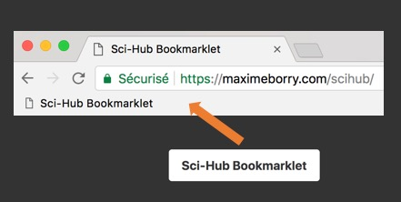

This Sci-Hub bookmarklet allows you to automatically redirect, on any web page, a DOI link to the pdf of the article retrieved from Sci-Hub.
Just drag and drop the bookmarklet bellow to your browser bookmark bar. When needed, just click on it to convert links.

Accessing articles behind paywalls through Sci-Hub is illegal. I'm not responsible for the use of this bookmarklet.